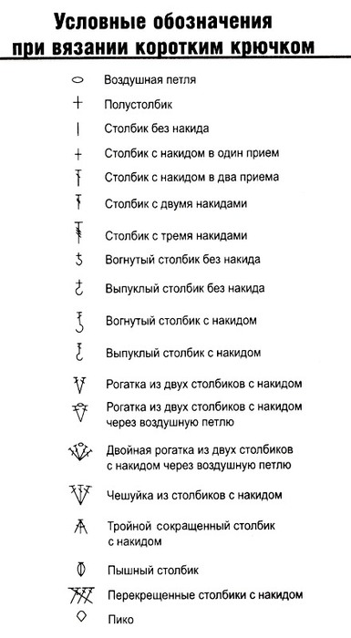

Мастер-классы игрушек
Вязаный Тоторо
Вы же видели мультфильм "Мой сосед Тоторо"? Нет? Обязательно посмотрите! Как сказал один мой знакомый: "Это же классика!", хотя с этим можно поспорить - мультфильм был показан в 1988 году. Но мультик восхитительный!
Мультфильм "Мой сосед Тоторо" японский, поэтому герои там необычные, как всегда, но очень забавные. На днях смотрела мультфильм с 16-ти летней дочкой, она его первый раз видела и пришла в восторг. Мультик милый, добрый, а Тоторошки такие смешные!
Для тех, кто не знает. Тоторо - это дух, хранитель леса. В мультфильме есть три Тоторо:
- Cамый большой, мохнатый, серый Тоторо, в несколько раз выше человека;
- Тоторо поменьше, средний, размером с большого кота;
- Маленький белый Тоторошка, еще в половину меньше.
Краткие обозначения:
Большой серый Тоторо

Потребуется:
- серая пряжа, я бы взяла акрил картопу гонка (автор предлагает вязать в 2 нити крючком № 3,5);
- немного белой пряжи для живота;
- немного белого флиса для глаз;
- немного зеленой пряжи для листика;
- немного черной пряжи для усов и носа;
- синтетический наполнитель;
- 2 черные полубусины 9 мм для глаз.
Глаза
1 ряд. Сделать кольцо амигуруми из 9 сбн.
2 ряд. прибавки до конца
Или вырезать из флиса круг диаметром 2 см
Тело
Вязать серой пряжей
1 ряд. Сделать кольцо амигуруми из 6 сбн;
2 ряд. пр х 6 раз (12);
3 ряд. (пр, 1 сбн) х 6 раз (18);
4 ряд. (пр, 2 сбн) х 6 раз (24);
5 ряд. (пр, 3 сбн) х 6 раз (30);
6 ряд. (пр, 4 сбн) х 6 раз (36);
7 ряд. (пр, 5 сбн) х 6 раз (42);
8 ряд. (пр, 6 сбн) х 6 раз (48);
9 ряд. (пр, 7 сбн) х 6 раз (54);
10 ряд. (пр, 8 сбн) х 6 раз (60);
11-20 ряд. 60 сбн (60);
Теперь можете пометить места для глаз между 14 и 15 рядом.
21 ряд. (пр, 5 сбн) х 10 раз (70);
22 ряд. (пр, 6 сбн) х 10 раз (80);
23-43 ряд. 80 сбн (80);
44 ряд. (уб, 18 сбн) х 4 раза (76);
45 ряд. 76 сбн (76);
46 ряд. (уб, 17 сбн) х 4 раза (72);
47 ряд. 72 сбн (72);
48 ряд. (уб, 16 сбн) х 4 раза (68)
49 ряд. 68 сбн (68);
50 ряд. (уб, 15 сбн) х 4 раза (64);
51 ряд. 64 сбн (64);
52 ряд. (уб, 14 сбн) х 4 раза (60);
53 ряд. 60 сбн (60);
54 ряд. (уб, 8 сбн) х 6 раз (54);
55 ряд. (уб, 7 сбн) х 6 раз (48);
56 ряд. (уб, 6 сбн) х 6 раз (42);
57 ряд. (уб, 5 сбн) х 6 раз (36);
58 ряд. (уб, 4 сбн) х 6 раз (30);
59 ряд. (уб, сбн) х 10 раз (20);
60 ряд. уб х 10 раз (10);v
61 ряд. уб х 5 раз (5).
Нить закрепить, обрезать, кончик спрятать внутрь.
К помеченным местам для глаз пришить вязанные белки глаз, или приклеить флис. Сверху приклеить черные глазки-полубусинки.
Пузико
Вязать белой или кремовой пряжей.
1 ряд. Сделать кольцо амигуруми из 6 сбн;
2 ряд. пр х 6 раз (12);
3 ряд. пр х 12 раз (24);
4 ряд. 24 сбн (24);
5 ряд. (пр, 2 сбн) х 8 раз (32);
6 ряд. (пр, 3 сбн) х 8 раз (40);
7 ряд. (пр, 7 сбн) х 5 раз (45);
8 ряд. (пр, 8 сбн) х 5 раз (50);
9 ряд. (пр, 9 сбн) х 5 раз (55);
10 ряд. (пр, 10 сбн) х 5 раз (60);
11 ряд. (пр, 5 сбн) х 10 раз (70);
12 ряд. (пр, 6 сбн) х 10 раз (80);
13-15 ряд. 80 сбн (80).
Сделать соединительный столбик, нить затянуть и обрезать, оставив кончик такой длины, чтобы хватило пришить пузико к телу.
Животик можно сразу пришить к телу, сравнивая уровень примерно с 23 рядом тела.
После этого можно вышить черной пряжей нос, усы, рот и полосы на животике серой пряжей.
Уши (2 детали)
Вязать серой пряжей.
1 ряд. Сделать кольцо амигуруми из 4 сбн;
2 ряд. (пр, сбн) х 2 раз (6);
3 ряд. (пр, 2 сбн) х 2 раза (8);
4 ряд. (пр, 3 сбн) х 2 раза (10);
5 ряд. (пр, 4 сбн) х 2 раза (12);
6 ряд. (пр, 5 сбн) х 2 раза (14);
7 ряд. 14 сбн (14);
8 ряд. (пр, 6 сбн) х 2 раза (16);
9 ряд. 16 сбн (16);
10 ряд. (пр, 7 сбн) х 2 раза (18);
11 ряд. 18 сбн (18);
12 ряд. (уб, 1 сбн) х 6 раз (12);
13-15 ряд. 12 сбн (12).
Сделать соединительный столбик, нить затянуть и обрезать, оставив конец для пришивания. Ушки пришить на уровне глаз
Хвост
Вязать серой пряжей.
1 ряд. Сделать кольцо амигуруми из 6 сбн;
2 ряд. пр х 6 раз (12);
3 ряд. (пр, 1 сбн) х 6 раза (18);
4 ряд. 18 сбн (18);
5 ряд. (пр, 2 сбн) х 6 раз (24);
6 ряд. 24 сбн (24);
7 ряд. (пр, 3 сбн) х 6 раз (30);
8 ряд. 30 сбн (30);
9 ряд. (пр, 4 сбн) х 6 раз (36);
10-19 ряд. 36 сбн (36).
Сделать соединительный столбик, нить затянуть и обрезать, оставив конец для пришивания.
Пришить хвост сзади внизу тела.
Руки (2 детали)
Вязать серой пряжей.
1 ряд. Сделать кольцо амигуруми из 6 сбн;
2 ряд. пр х 6 раз (12);
3 ряд. (пр, 2 сбн) х 4 раза (16);
4 ряд. 16 сбн (16);
5 ряд. (пр, 3 сбн) х 4 раза (20);
6-8 ряд. 20 сбн (20);
9 ряд. (пр, 4 сбн) х 4 раза (24);
10-15 ряд. 24 сбн (24);
16 ряд. (уб, 4 сбн) х 4 раза (20);
17-19 ряд. 20 сбн (20);
20 ряд. (уб, 3 сбн) х 4 раза (16);
21 ряд. 16 сбн (16);
22 ряд. (уб, 2 сбн) х 4 раза (12).
Края сложить вместе и провязать, подхватывая 2 петли вместе.
Сделать соединительный столбик, нить затянуть и обрезать, оставив конец для пришивания.
Руки пришить на уровне 22 ряда туловища.
Листик
Вязать зеленой пряжей
1 ряд. Сделать кольцо амигуруми из 6 сбн;
2 ряд. пр х 6 раз (12);
3 ряд. пр х 12 раз (24);
4 ряд. (пр, 2 сбн) х 8 раз (32);
5 ряд. СС, ВП подъема, повернуть вязание и вязать через одну (сделанный соединительный столбик) петлю,
(пр, 3 сбн) х 7 раз, пр, 2 сбн (39);
6 ряд. ВП подъема, поворот, вязать через одну петлю, (пр, 3 сбн) х 9 раз, сбн, сс (47);
7 ряд. ВП подъема, поворот, вязать через одну петлю, 45 сбн, 2 сс.
Нить затянуть, обрезать и спрятать.
Вверху листика присоедините зеленую нить и провяжите цепочку из воздушных петель, чтобы получился хвостик.
Синий (или белый) тоторо

Потребуется:
- синяя и белая пряжа.
- черные глаза-полубусины.
Уши (2 детали)
Вязать синей пряжей
1 ряд. 4 сбн в кольцо амигуруми (4);
2 ряд. (пр, 1 сбн) х 2 раза (6);
3 ряд. (пр, 2 сбн) х 2 раза (8);
4 ряд. 8 сбн (8);
5 ряд. (пр, 3 сбн) х 2 раза (10);
6 ряд. (пр, 4 сбн) х 2 раза (12);
7 ряд. (пр, 5 сбн) х 2 раза (14);
8 ряд. (пр, 6 сбн) х 2 раза (16);
9 ряд. (уб, 2 сбн) х 4 раза (12);
10 ряд. (пр, 1 сбн) х 6 раз (18);
Для первого уха нить затянуть и обрезать. Для второго уха: приложить первое ухо, сложив 2 детали вместе, провязать 6 сбн захватывая петли обеих деталей. Далее:
11 ряд. 15 сбн по одной детали, 15 сбн по второй детали (30);
Дальше вязать тело.
12-13 ряд. 30 сбн (30);
14 ряд. (пр, 4 сбн) х 6 раз (36);
15-20 ряд. 36 сбн (36);
Набить уши.
21 ряд. (пр, 5 сбн) х 6 раз (42);
22-31 ряд. 42 сбн (42);
32 ряд. (уб, 12 сбн) х 3 раза (39);
33 ряд. (уб, 11 сбн) х 3 раза (36);
34 ряд. (уб, 10 сбн) х 3 раза (33);
35 ряд. (уб, 9 сбн) х 3 раза (30);
36 ряд. (уб, 3 сбн) х 6 раз (24);
37 ряд. уб. х 12 раз (12);
38 ряд. уб х 6 раз (6).
Нить затянуть, обрезать и спрятать.
Хвост
1 ряд. 6 сбн в кольцо амигуруми (6);
2 ряд. (пр, сбн) х 3 раза (9);
3 ряд. (пр, 2 сбн) х 3 раза (12);
4 ряд. 12 сбн (12);
6-8 ряд. 15 сбн (15).
Сделать соединительный столбик, нить затянуть, обрезать, оставив конец для пришивания.
Животик
Белой пряжей.
1 ряд. 6 сбн в кольцо амигуруми (6);
2 ряд. пр х 6 раз (12);
3 ряд. пр х 6 раз (24);
4 ряд. 3 сбн, (пр, сбн) х 3 раза, 6 сбн, (пр, сбн) х 3 раза, 3 сбн (30);
6 ряд. 5 сбн, (пр, 3 сбн) х 3 раза, 6 сбн, (пр, 3 сбн) х 3 раза, сбн (42);
7-8 ряд. 42 сбн.
Сделать соединительный столбик, нить затянуть, обрезать, оставив конец для пришивания.
Руки (2 детали)
Вязать синей пряжей
<1 ряд. 4 сбн в кольцо амигуруми (4);
2 ряд. (пр, 1 сбн) х 2 раза (6);
3 ряд. (пр, 2 сбн) х 2 раза (8);
4 ряд. 8 сбн (8);
5 ряд. (пр, 3 сбн) х 2 раза (10);
6 ряд. 10 сбн (10)
7 ряд. (уб, 3 сбн) х 2 раза (8);
8-9 ряд. 8 сбн.v
Сделать соединительный столбик, нить затянуть, обрезать, оставив конец для пришивания.
Маленький Тоторо

Потребуется:
- белая пряжа.
- черные глаза-полубусины.
Белой пряжей.
1 ряд. 6 сбн в кольцо амигуруми (6);
2 ряд. (пр, (5 пссн, сбн) в 1 петлю, пр) х 2 раза (12);
3 ряд. (пр, сбн) х 6 раз (18);
4-5 ряд. 18 сбн (18);
6 ряд. (пр, 2 сбн) х 6 раз (24);
7-9 ряд. 24 сбн (24);
10 ряд. сбн, (3 пссн в 1 петлю) х 2 раза (формируется хвост, в следующем ряду это провязывается как 2 петли), 21 сбн (23);
11 ряд. 3 сбн, (уб, 2 сбн) х 5 раз (18);v
12 ряд. уб х 6 раз (12);
13 ряд. уб х 6 раз (6).
Нить затянуть, обрезать и спрятать.
Вход
Еще не зарегистрировались?
Регистрация
Контакты